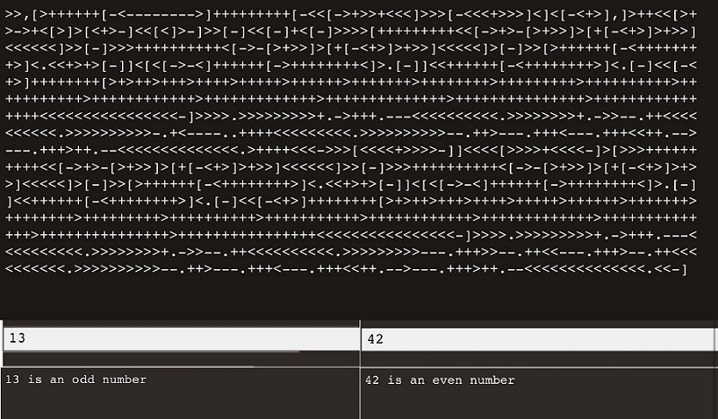

DIGI 320 Labs
AI languages
Lisp (historically LISP) is a family of computer programming languages with a long history and a distinctive, fully parenthesized prefix notation. Originally specified in 1958, Lisp is the second-oldest high-level programming language in widespread use today. Only Fortran is older, by one year. Lisp has changed since its early days, and many dialects have existed over its history. Today, the best known general-purpose Lisp dialects are Clojure, Common Lisp, and Scheme.
Lisp was originally created as a practical mathematical notation for computer programs, influenced by the notation of Alonzo Church's lambda calculus. It quickly became the favored programming language for artificial intelligence (AI) research. As one of the earliest programming languages, Lisp pioneered many ideas in computer science, including tree data structures, automatic storage management, dynamic typing, conditionals, higher-order functions, recursion, the self-hosting compiler, and the read–eval–print loop.
The name LISP derives from "LISt Processor". Linked lists are one of Lisp's major data structures, and Lisp source code is made of lists. Thus, Lisp programs can manipulate source code as a data structure, giving rise to the macro systems that allow programmers to create new syntax or new domain-specific languages embedded in Lisp.
Brainfuck
Brainfuck is an esoteric programming language created in 1993 by Urban Müller, and notable for its extreme minimalism. The language consists of only eight simple commands and an instruction pointer. While it is fully Turing complete, it is not intended for practical use, but to challenge and amuse programmers. Brainfuck simply requires one to break commands into microscopic steps. The language's name is a reference to the slang term brainfuck, which refers to things so complicated or unusual that they exceed the limits of one's understanding.
